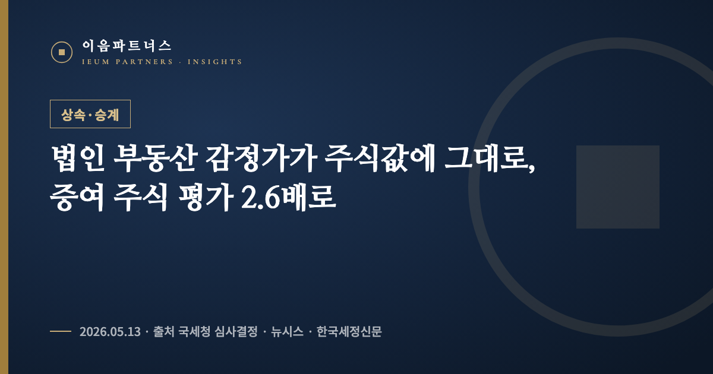

법인 부동산 감정가가 주식값에 그대로, 증여 주식 평가 2.6배로

부동산을 많이 가진 법인의 주식을 가족에게 증여할 때, 그동안은 회사 땅과 건물을 공시지가나 기준시가로 계산해 주식 가치를 신고하는 경우가 많았습니다. 그런데 국세청이 법인 소유 부동산을 나중에 감정평가하고, 그 감정가로 주식 가치를 다시 계산해 증여세를 더 매긴 처분이 정당하다는 심사 결정을 내렸습니다(2026년 5월 13일, 심사증여2026-5). 이 글에서는 결정 내용과 지분 증여를 준비하는 대표님이 확인할 점을 정리합니다.
부동산 비중이 큰 회사일수록 부동산 값이 주식 가치를 크게 좌우합니다. 신고한 금액과 국세청이 감정한 금액의 차이가 크면 증여세가 몇 배로 늘 수 있으니, 증여 전에 미리 따져 보는 것이 좋습니다. 우리 회사 주식 가치가 궁금하시면 카카오톡 채널 이음파트너스에서 함께 계산해 볼 수 있습니다.
어떤 사건이었나
청구인은 2025년 1월 2일 배우자로부터 부동산을 주로 가진 비상장법인 주식 27,410주(전체의 19.5%)를 증여받았습니다. 회사 땅과 건물을 공시지가·기준시가로 계산해 1주당 58,374원으로 신고했지만, 국세청은 증여세 조사 중 감정평가법인 두 곳에 회사 부동산 감정을 맡기고 그 평균값으로 주식 가치를 다시 계산했습니다.
| 구분 | 내용 |
|---|---|
| 회사 부동산 평가 | 신고 약 94억 8,600만 원(공시지가·기준시가) → 감정가 평균 약 223억 800만 원 |
| 1주당 가치 | 58,374원 → 149,950원 (약 2.6배) |
| 증여재산가액 | 약 16억 원 → 약 41억 1,000만 원 |
| 증여세 | 신고·납부 약 2억 4,000만 원, 추가 고지 약 10억 5,500만 원 |
| 절차 | 2025년 8월 감정 실시, 9월 23일 지방국세청 평가심의위원회가 시가로 인정 |
| 결과 | 2026년 5월 13일 심사청구 기각 |
국세청은 왜 정당하다고 봤나
이 회사는 자산 대부분이 부동산이어서 주식을 순자산가치(회사 자산에서 부채를 뺀 값)로만 평가하는 법인이었습니다. 순자산가치를 계산할 때 회사 자산은 시가가 있으면 시가로 평가하는데, 세법은 평가기간이 지난 뒤라도 증여세 신고기한부터 6개월 안에 나온 감정가는 평가심의위원회(시가 인정 여부를 심의하는 국세청 위원회) 심의를 거쳐 시가로 볼 수 있게 하고 있습니다. 이 사건에서 위원회는 “감정평가금액을 시가로 볼 수 있다”고 결정했고, 국세청은 이 절차를 거친 과세에 잘못이 없다고 판단했습니다(국세청 심사결정).
다만 국세청 감정가가 언제나 인정되는 것은 아닙니다. 대법원은 다른 증여 사건에서 증여일부터 감정평가서 작성일까지 가격 변동에 특별한 사정이 없어야 감정가를 시가로 볼 수 있다고 보고, 증여 3개월 뒤를 기준으로 한 국세청 감정가(61억 9,108만 원)에 따른 증여세 6억 4,383만 원을 취소한 원심을 확정했습니다(뉴시스). 감정 기준일과 절차가 맞는지 따져 볼 여지는 남아 있는 셈입니다.
대표님이 지금 확인할 것
- 회사 자산 가운데 부동산 비중이 얼마인지, 장부가·공시가격과 예상 시세가 얼마나 차이 나는지 먼저 확인하세요.
- 지분 증여 전에 회사 부동산을 감정평가해 그 값으로 주식을 평가하는 방법과 공시가격으로 신고하는 방법의 세액 차이를 비교해 보세요.
- 2026년 2월 27일부터 부동산 비중이 80% 이상인 법인의 주식 평가 방법도 바뀌었으니(한국세정신문), 최신 기준으로 다시 계산하시길 권합니다.
참고한 자료
- 주식발행 법인 소유 부동산 소급감정 (심사증여2026-5, 국세법령정보시스템에서 결정번호로 검색) — 국세청 심사결정 (2026.05.13)
- '꼬마빌딩 감평가' 증여세 분쟁서 당국 패소…法 "시가와 괴리" — 뉴시스 (2026.07.08)
- 2025년 세법 시행령 개정안-상속세 및 증여세법 — 한국세정신문 (2026.01.27)
부동산이 많은 법인의 지분 증여를 계획하고 계시다면 카카오톡 채널 이음파트너스로 편하게 문의해 주세요.
※ 이 글은 일반적인 정보 제공을 위한 것으로, 개별 사안은 세무사·노무사 등 전문가와 함께 확인하시기 바랍니다.